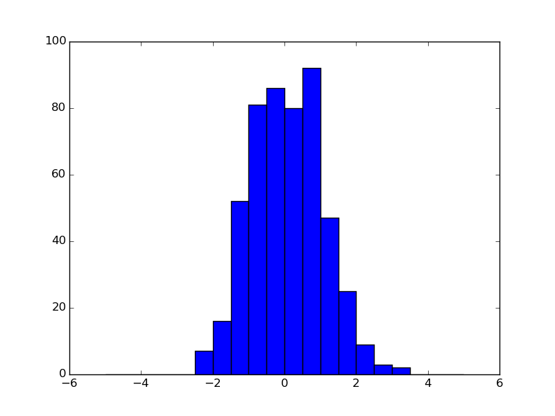

A simple, one dimensional histogram is filled in a loop with random values. The result is than plotted with the build in plot command.
Python source code: plot_simple_1D_hist_example.py
from pyhistogram import Hist
import numpy as np
import matplotlib.pyplot as plt
h = Hist(20, -5, 5)
sample = np.random.normal(size=500)
for v in sample:
h.fill(v)
h.plot()
plt.show()
Total running time of the example: 0.09 seconds